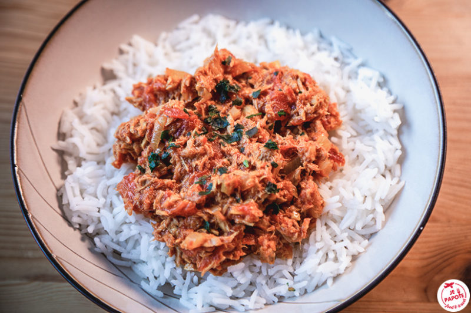

Cari Thon
Description
Plat traditionnel créole réunionnais.
Ingrédients
- 1x Oignon
- 1x Gousse d'ail
- 1x boite de Thon
- 1x Courgette
- 1x Carotte
- 100g Riz Basmati
- Huile de tournesol
- Curcuma
- Sel
- Poivre
Étapes
- Couper en brunoise oignon et ail.
- Couper en paysanne votre courgette.
- Couper en sifflet votre carotte.
- Mettre à cuir le riz.
- Mettre à feu doux une marmite avec un peu d'huile.
- Faire suer les oignons.
- Lorsque les oignons deviennent translucides, ajouter votre ail.
- Laisser frire 1 minute, puis ajouter courgettes et carottes.
- Laisser cuire pendant 3 minutes à feu doux avec un couvercle.
- Ajouter votre thon, laisser cuire le tout pendant 5 minutes à feu très doux
- VOILA!